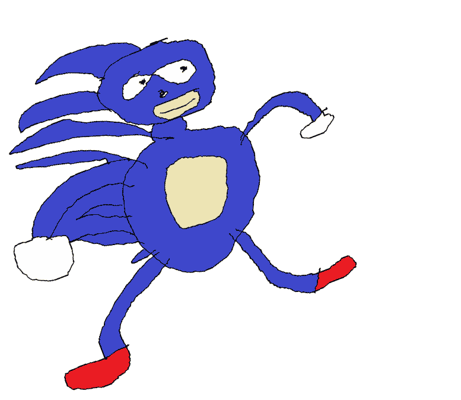

<header>
    <style>
        .css-selector {
            background: linear-gradient(269deg, #ff0000, #d000ff);
            background-size: 400% 400%;

            -webkit-animation: AnimationName 7s ease infinite;
            -moz-animation: AnimationName 7s ease infinite;
            animation: AnimationName 7s ease infinite;
        }

        @-webkit-keyframes AnimationName {
            0%{background-position:0% 52%}
            50%{background-position:100% 49%}
            100%{background-position:0% 52%}
        }
        @-moz-keyframes AnimationName {
            0%{background-position:0% 52%}
            50%{background-position:100% 49%}
            100%{background-position:0% 52%}
        }
        @keyframes AnimationName {
            0%{background-position:0% 52%}
            50%{background-position:100% 49%}
            100%{background-position:0% 52%}
        }
        body
        {
            font-size: 30px;
        }
    </style>
</header>
<body class="css-selector">
    wow c super ce site est super statique avec deux pages!
    <br /><a href="index.html">retour</a>
    <br /><a href="https://www.youtube.com/watch?v=KsMKOx6fumc&ab_channel=Nekrogoblikon">musique</a>
    <marquee scrollamount="100"></marquee>
    <a href="./wordpress/"><h1>mon skyblog</h1></a>
</body>